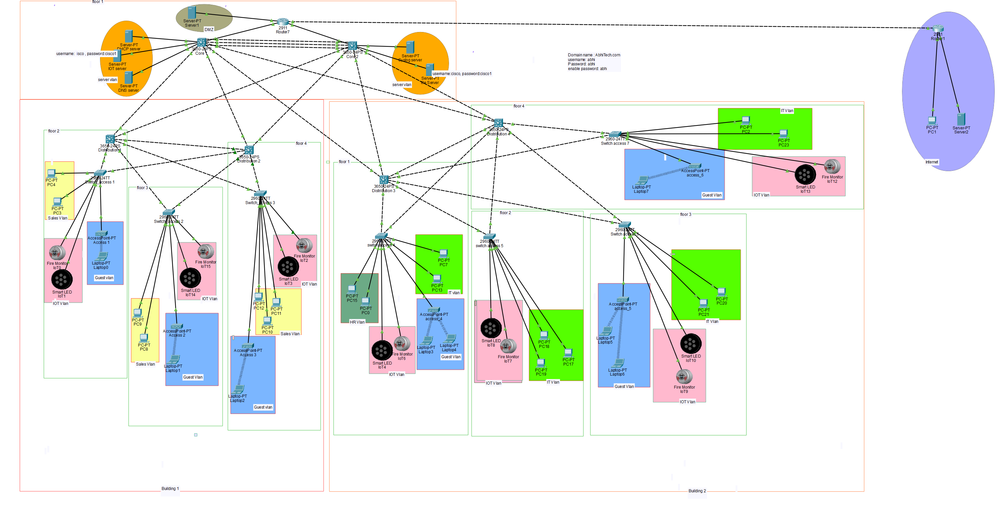

Networking-focused IT student - Darwin, NT
I design networks.
Then I write the code
that supports them.
Bachelor of IT student at Charles Darwin University, currently preparing for the CCNA 200-301. Networking is where I focus - VLANs, routing, redundancy, and security. I also know Python and Django, and I'd love to bring the two together through network automation.
01 - Work
What I've built.

Live on GitHub
AbhiTech Solutions - enterprise LAN build
A full three-tier network I designed and built from scratch in Cisco Packet Tracer as part of my CCNA preparation - modelling a real company across two buildings, seven VLANs, and a complete 172.16.0.0/16 VLSM addressing plan.
- Core / Distribution / Access hierarchical design with HSRP redundancy and per-VLAN load balancing
- Port security, DHCP snooping, and Dynamic ARP Inspection on every access switch
- Static NAT for a public-facing web server, PAT for all other internal traffic
- Guest VLAN fully isolated from the internal LAN via ACLs, internet access only
- Internal DNS, DHCP, file, and IoT servers, all reachable by hostname
7
VLANs
2
Buildings
/16
VLSM base
3
Tier design
Live
This portfolio site
The site you're on right now - hand-built with HTML, CSS, and vanilla JavaScript, hosted on GitHub Pages.
View on GitHub >02 — Skills
What I work with.
net0/1 — primary focus
Networking
- TCP/IP & subnetting
- VLANs, routing & switching fundamentals
- HSRP redundancy & load balancing
- DHCP / DNS basics
- Network troubleshooting
- Cisco Packet Tracer - hands-on labs
py0/1
Programming & Web
- Python - loops, functions, file handling
- Django - basic web applications
- HTML / CSS / JavaScript basics
sup0/1
IT Support
- Windows & macOS fundamentals
- Microsoft Office
- Hardware setup & basic troubleshooting
- User support fundamentals
03 - Background
Study & certification.
I'm completing a Bachelor of Information Technology at Charles Darwin University, graduating November 2026, and preparing for the CCNA 200-301 alongside it. My interest in networking started practical and stayed practical - I like the parts you can actually test: does the ping return, does the VLAN pass traffic where it should, does the failover actually fail over.
Bachelor of Information Technology
Charles Darwin University - Darwin, NT
Expected completion: November 2026
Advanced Diploma of Information Technology
Southern Academy of Business and Technology - Sydney, NSW
Completed 2024
CCNA 200-301
Cisco Certified Network Associate
In progress
04 - Contact
Let's talk.
Open to Service IT and graduate opportunities in Darwin and across the NT.
Brinkin, NT